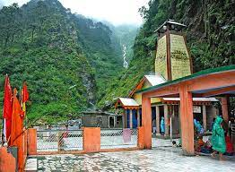
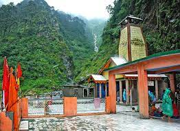

HISTORY OF YAMUNOTRI
Yamunotri is where the second most holy of river of India, the River Yamuna, takes birth.
Situated in the Uttarkashi district of Uttarakhand, Yamunotri Dham is the
first stop in the pilgrimage. It is believed that bathing in its water
cleanses all sins and protects from untimely and painful death. The shrine
of Yamunotri is believed to be built in 1839 by the king of Tehri, Naresh
Sudarshan Shah. Besides the Yamuna Devi (goddess), the idol of Ganga Devi
too is housed in the revered temple. There are many hot water springs near
the temple; Surya Kund is the most important among them. Devotees boil
rice and potatoes in the kund and accept it as a Prasad of the devi.
LEGEND
Yamuna Goddess is believed to be Sun's daughter and twin sister of
Yama (the god of death). It is said that sage Asit Muni lived here and
bathed in both Ganga and Yamuna. In his old age, when he was unable to go
to Gangotri, a stream of Ganga started to flow across the steam of Yamuna.
FOLK TALE BEHIND YAMUNOTRI
According to mythological beliefs, there was once the ashram of Asit Rishi.
He used to visit the Yamuna regularly till the origin of Yamuna.
When he became incapacitated in old age, it became impossible for him
to reach the source of Yamuna. Impressed by the faith of Asit Rishi towards himself,
Yamuna changed its flow and started flowing near his ashram.
Pleased with the grace of Yamuna, the sage built his temple there and started
worshiping Goddess Yamuna. That holy place was called Yamunotri and became the
main pilgrimage of Goddess Yamuna.